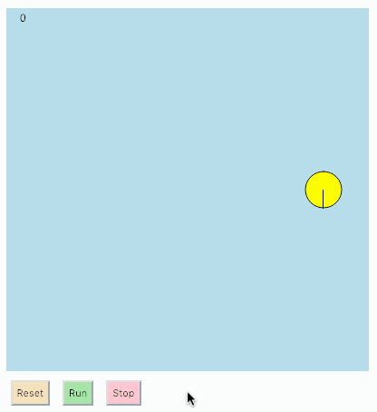

due Tue Jan 22, 2019, 9:00 PM
In this assignment you will create a single bot that moves around the arena in a circular path. The resulting simulation will look something like this:

The arena is 400 x 400 pixels.
The bot is drawn as a yellow circle with a radius of 20 pixels.
The bot has a solid line indicating its heading direction.
The bot’s initial conditions:
x: 50 pixels from the right edge of the arena
y: half way down the arena
heading: facing the bottom of the arena
The bot’s movement:
speed: the bot moves at a constant speed of 3 pixels/tick
heading: on each tick, the heading should be incremented by a fixed amount,
then the bot should be moved by 3 units in that direction. The resulting change in x and y position are given by:
dx = speed * cos(heading)
dy = speed * sin(heading)
trajectory: the bot should move along a circular path with a diameter of 300 pixels. This will be accomplished by incrementing the bot’s heading direction by a fixed amount on each tick. You will need to compute the value for the amount to increment the heading. To do so, consider the following: